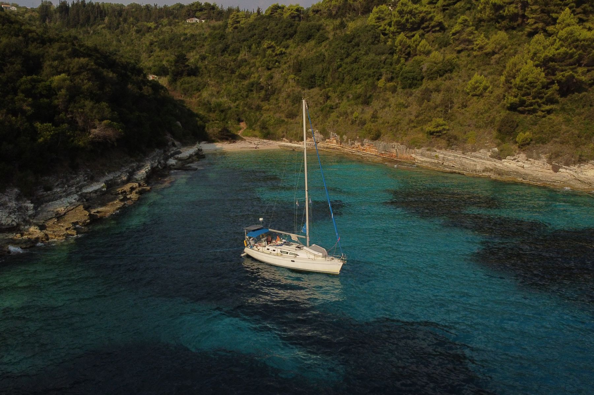
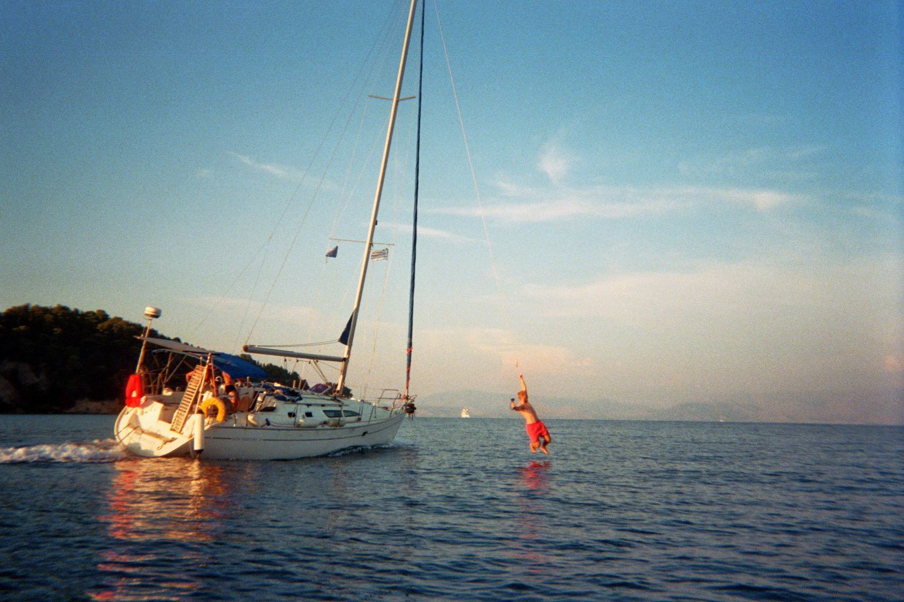

Projekt 02 · Korfu · 2026
Dagen Yachtcharter
Eine Woche an Bord, eine Kamera dabei: Wir haben Segeln so erzählt, dass es eine jüngere Zielgruppe sehen will.
- Kunde
- Dagen Yachtcharter
- Wann
- September 2026
- Wo
- Korfu, Griechenland
- Content
- 10 Reels · tägliche Stories
- Unsere Rolle
- Konzept, Dreh, Schnitt, Posting
Die Aufgabe
Segeln kann jeder buchen.
Man muss es nur wollen.
Dagen Yachtcharter vermietet Segelboote. Der Instagram-Kanal stand noch ganz am Anfang. Das Ziel: Chartern für eine jüngere Zielgruppe attraktiv machen und zeigen, dass ein Segeltörn genau das Erlebnis ist, das sie suchen.
Die Umsetzung
Eine Woche an Bord, jeden Tag Content.
Statt Werbefilm haben wir gezeigt, wie sich eine Woche auf dem Boot wirklich anfühlt. Gedreht haben wir an Bord, die Stories liefen jeden Tag live mit, dazu zehn Reels für den Kanal.
- Content-Konzept
- Dreh an Bord
- 10 Reels
- Tägliche Stories
- Schnitt & Posting
- Auswertung
Der Content
Reels aus der Woche.
Die drei stärksten der zehn Reels. Views laut Instagram, Stand November 2026.
Der Film zur Woche
Das Revier
Eine Woche rund um Korfu.
Buchten, Ankerplätze und Abende auf dem Ionischen Meer – die perfekte Kulisse für Content, der nach Urlaub aussieht und nicht nach Werbung.
Das Ergebnis
Über 270.000 Views mit zehn Reels.
- Views pro Reel im Schnitt
- +13.000 %
- Top-Reel
- 178.000
- Reel-Views gesamt
- 270.000+
Vorher kamen die Reels des Kanals im Schnitt auf rund 200 Views. Unsere Reels aus der Woche liegen bei rund 27.000 Views im Schnitt, also etwa 130-mal so viel. Der Beweis, dass Segeln auf Social Media funktioniert, wenn man es richtig erzählt.
„Die Woche mit den Jungs von onside.hq hat unserem Instagram-Account rund 250.000 Views gebracht, und wir haben viele positive Rückmeldungen zu den Inhalten bekommen. Unkomplizierte Zusammenarbeit, sehr professionelle Aufnahmen.“
Eindrücke
Die Woche in Bildern.



Euer Projekt